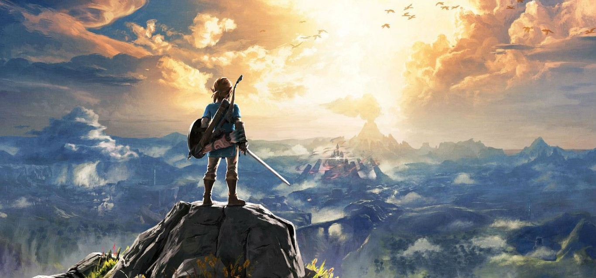
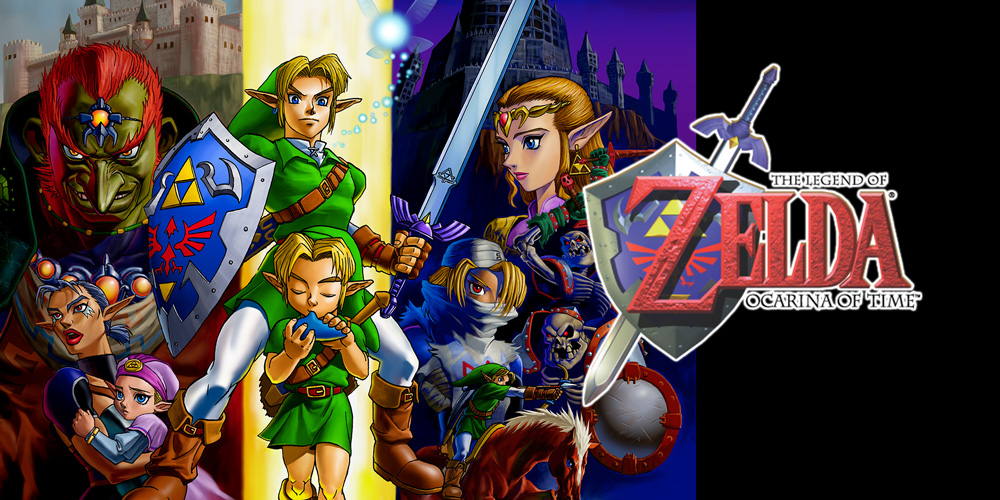
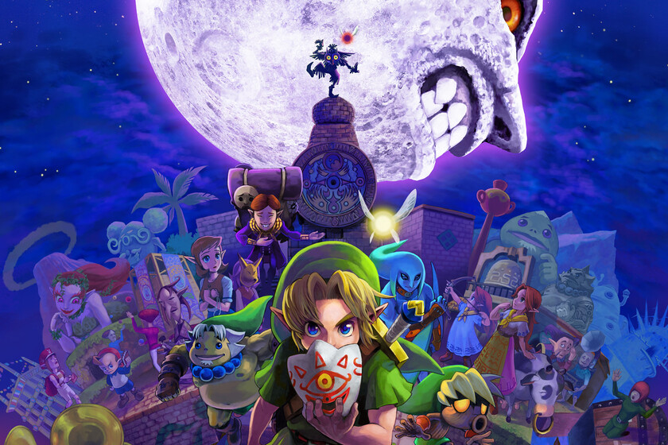
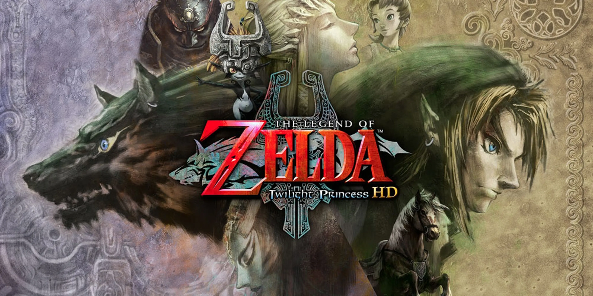

Es una de las sagas de videojuegos mas iconicas y queridas de todos los tiempos. Fue creada por Shigeru Miyamoto y desarrollada por Nintendo, con su primer juego lanzado en 1986 para la consola NES.
Historia principal:
El juego sigue las aventuras de Link, un joven valiente que debe rescatar a la Princesa Zelda y derrotar al malvado Ganon (o Ganondorf en algunos títulos), quien busca apoderarse de la Trifuerza, un artefacto mágico con un poder inmenso.
Link explora mazmorras, resuelve acertijos y combate monstruos para recolectar artefactos, ganar habilidades y cumplir su misión heroica.
Elementos clave de la saga:
Link: El protagonista, reencarnado en cada entrega.
Zelda: La princesa del reino de Hyrule; sabia y poderosa.
Ganon(dorf): El villano principal, busca dominar Hyrule.
La Trifuerza: Una reliquia dividida en tres partes: Poder, Sabiduría y Coraje.
Hyrule: El reino donde ocurren la mayoría de las historias.
La serie ha revolucionado el diseño de videojuegos con sus mundos abiertos, mecánicas de exploración, narrativa profunda y música inolvidable. Ha vendido más de 130 millones de copias y sigue siendo una referencia en el mundo gamer.

2. 👧 Zelda no es el protagonista Muchos aún confunden a Zelda con el personaje principal. En realidad, el protagonista es Link. Zelda es la princesa que suele necesitar ayuda, aunque en juegos como Spirit Tracks y Tears of the Kingdom tiene un rol más activo.
3. 🎨 Link originalmente iba a tener una espada láser Durante los primeros conceptos del juego, Link tendría una espada de tipo futurista (láser), y el juego mezclaba ciencia ficción y fantasía. Esto se descartó por limitar el estilo artístico y la ambientación.
4. 🕹️ El primer Zelda tenía sistema de guardado único The Legend of Zelda (1986) para NES fue el primer juego en consola doméstica que permitió guardar partidas gracias a una batería interna en el cartucho.
5. 🎶 La música de Koji Kondo fue improvisada al último momento La pieza "Overworld Theme" del primer Zelda fue compuesta rápidamente por Koji Kondo porque Nintendo no consiguió los derechos de uso de una sinfonía de Maurice Ravel.
6. 🧝 El diseño de Link está basado en Peter Pan Su gorro verde, orejas puntiagudas y túnica son inspiraciones claras de Peter Pan, un personaje que, como Link, también nunca crece y vive aventuras mágicas.
7. ⏳ La cronología oficial fue un misterio por décadas Nintendo no reveló la línea temporal oficial hasta el lanzamiento del libro Hyrule Historia en 2011. Antes, los fans solo podían teorizar cómo se conectaban los juegos.
8. 🔁 Hay 3 líneas temporales distintas Tras Ocarina of Time, la historia se divide en tres posibles líneas: Victoria de Link (niño) → Majora’s Mask, Twilight Princess Victoria de Link (adulto) → Wind Waker, Phantom Hourglass Derrota de Link → A Link to the Past, Link’s Awakening
9. 🐴 Epona fue la primera montura realista en un juego 3D Ocarina of Time fue pionero en ofrecer un sistema de montura con físicas decentes. Epona ayudó a hacer el mundo más amplio y libre, un hito en 1998.
10. 🧠 Breath of the Wild se inspiró en Skyrim y Minecraft Nintendo admitió que estudiaron juegos como Skyrim y Minecraft para implementar un mundo abierto con libertad total de exploración y manipulación del entorno.
11. 🧪 "Tears of the Kingdom" casi se retrasa por el nombre El título no fue revelado durante el primer tráiler oficial porque incluía la palabra “Tears” (lágrimas), lo cual coincidía con el luto nacional en Reino Unido por la muerte de la Reina Isabel II.
12. 🐓 Las gallinas son invencibles... y vengativas Atacar una cucco repetidamente en casi cualquier Zelda hará que un enjambre te ataque sin piedad. Es un easter egg recurrente y humorístico de la saga